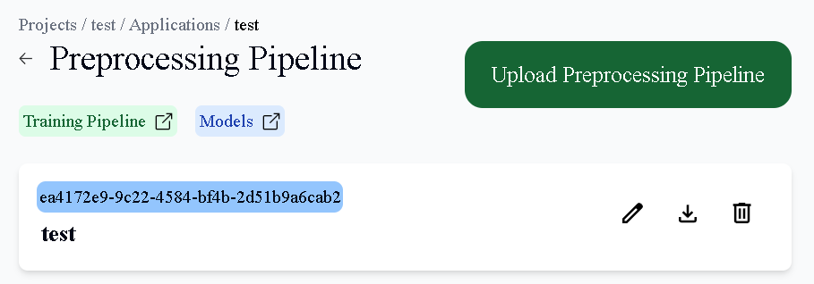
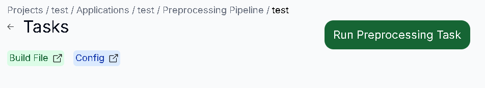
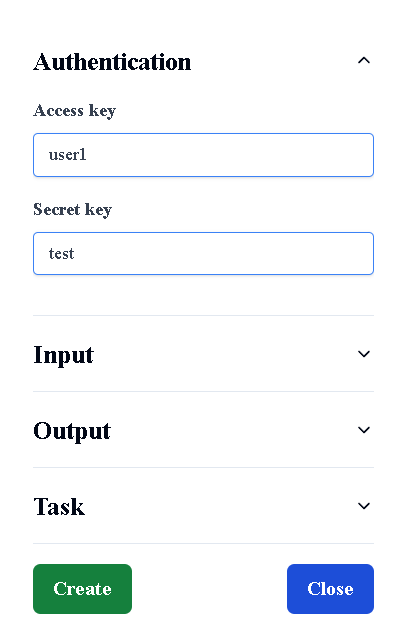
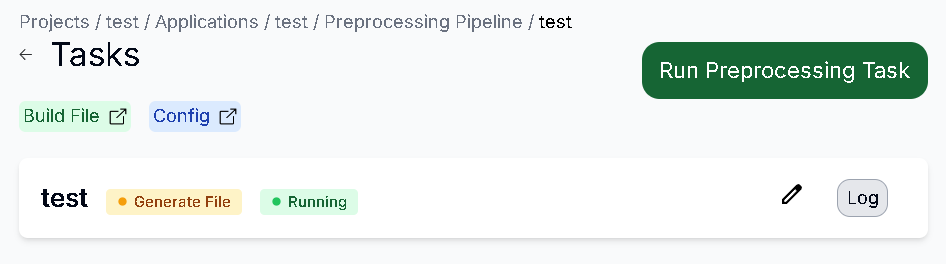
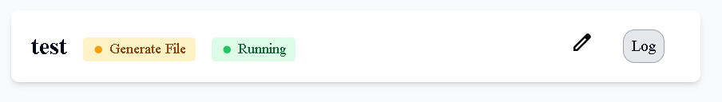
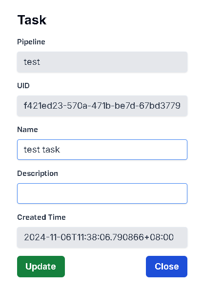
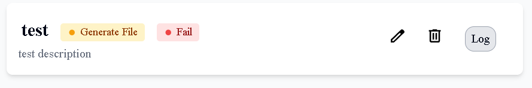

查看所有Preprocessing Task
用途
查看你的 Preprocessing Pipeline 內的所有 Task 資訊
操作步驟
進入Preprocessing Pipeline頁面後，點擊Pipeline，即可顯示所有Task

新增Preprocessing Task
用途
為你的 Preproceesing Task 創建資訊
操作步驟
按下Run Preprocessing Task按鈕

輸入你的 Task資訊，輸入完後按下Create按鈕
- Authentication：Access Key為登入帳號、Secret Key為登入密碼
- Input：選擇你要Preprocessing的Dataset、Build File(Image)、Config
- Output：輸入訓練完的Dataset資訊
Task：輸入你的Task資訊

Preprocessing Task 創建成功

更新Preprocessing Task
用途
更新你的 Preproceesing Task 資訊
操作步驟
點擊右方的Edit圖示

輸入更新的Task資訊，完成後按下Update按鈕

Task更新成功

下載Preprocessing Task Log
用途
下載你的 Preproceesing Task Log 資訊
操作步驟
點擊右方的Log按鈕，在下載紀錄按下保留檔案，即可下載成功
刪除Preprocessing Task
用途
刪除已不需要的 Preprocessing Task 資訊
操作步驟
點擊右方的Delete圖示 (當task狀態不是Running時出現)
按下Delete按鈕即可刪除成功